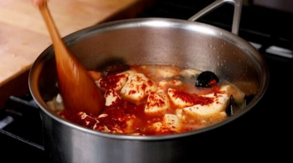

Spicy Soft Tofu Stew | Haemul Sundubu-Jjigae
Description
Sundubu-jjigae (sometimes spelled soondubu-jjigae) is a spicy, seasoned stew made with a type of silky
soft tofu called sundubu. Served hot at the table in its traditional earthenware bowl, it's impossible
to resist.
Optional

Sundubu-jjigae are traditionally served in an earthware bowl, but can be serve in a normal bowl as well.
Ingredients:
- ¼ cup gochugaru (Korean hot pepper flakes)
- 2 teaspoons toasted sesame oil
- ¼ teaspoon ground black pepper
- 1 tablespoon vegetable oil
- 2 garlic cloves, minced
- ¼ cup (about 1 ounce) chopped onion
- 1 large king oyster mushroom (or ½ cup of any mushrooms), chopped
- 1 large green onion (dae-pa) or 2 green onions, the white part and green part separated and chopped
- 2½ cups anchovy kelp stock (or vegetable stock, or beef or chicken broth)
- 2 tablespoons fish sauce (or salt to your taste)
- 2 tubes soft tofu (or 22 ounces silken tofu)
- 2 to 3 large deveined shrimp in the shell, rinsed
- 6 fresh shucked or shucked frozen oysters, rinsed
- 4 to 6 fresh mussels, cleaned and rinsed
- 2 eggs
Directions:
- Combine the hot pepper flakes, sesame oil, and black pepper in a small bowl. Mix well with a spoon until
the hot pepper flakes absorb all the oil. Set aside.
- Heat the vegetable oil in a large saucepan over medium-high heat. Add the onion, garlic, the chopped
white part of the green onion, and mushroom. Stir with a wooden spoon until the onion and garlic are
slightly brown and crispy, 2 to 3 minutes. Add the stock. Cover and cook for 5 to 6 minutes, until it's
boiling vigorously.
- Add shrimp, oysters, and mussels. Cut the tubes of tofu in half and squeeze them into the boiling stew,
and then break up the tofu a bit with a wooden spoon. If using silken tofu, scoop or squeeze from the
box into the stew.
- Add the fish sauce (or salt to your taste), half of the hot pepper mixture, and stir a few times.

- Cover and cook for 5 to 6 minutes, until the seafood is fully cooked and the broth is infused with its
savory flavor.
2 ways to serve:
Serve in Korean earthenware bowls:
- Ladle the stew into 2 earthenware bowls (2½ cup bowls work best) and place them on the stove top. Heat them
up over high heat. Add the leftover seasoning mixture on top of the stew in each bowl.
- When the stews starts bubbling, crack the eggs into each bowl. Cook for another minute until vigorously
boiling. Remove from the heat and sprinkle the green part of the chopped green onion over top.
- Serve right away while it's bubbling, with rice, kimchi, and more side dishes on the side.
Serve in regular soup bowls:
- Add the second half of the seasoning mixture to the boiling stew in the pot and mix it in a bit.
Carefully crack the eggs into the bubbling stew, and cook for 1 or 2 minutes until the eggs are slightly (or
half) cooked. Remove from the heat.
- Gently ladle the stew into two soup bowls without disturbing the eggs. Scoop up each egg and place one in
each bowl.
- Sprinkle the green part of the chopped green onion over top and serve right away with rice, kimchi, and more
side dishes.